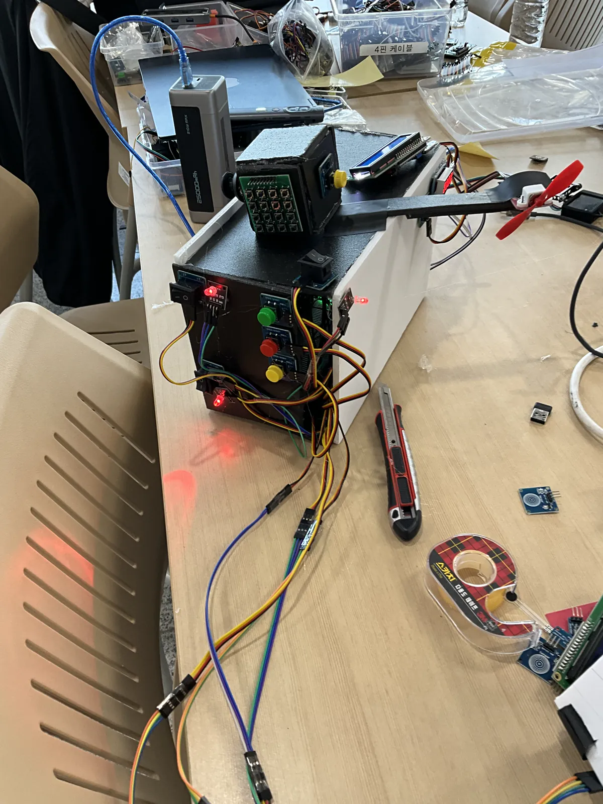
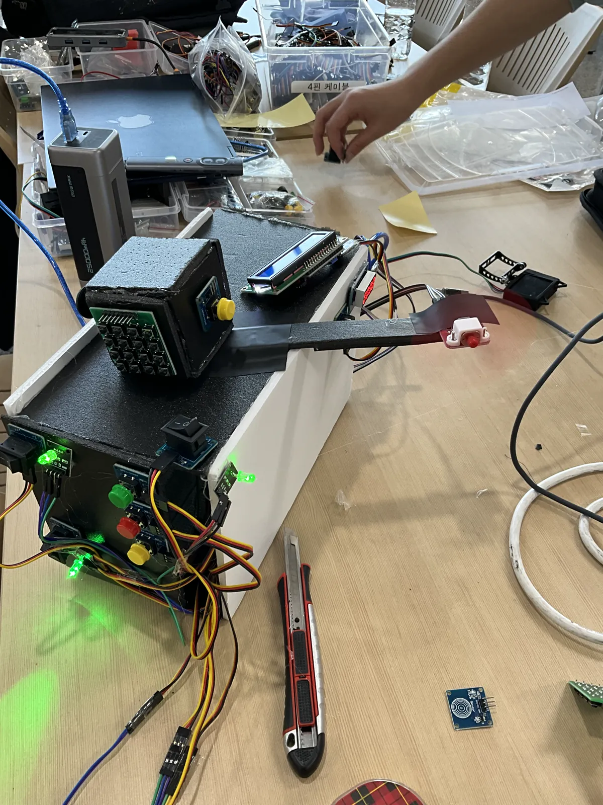
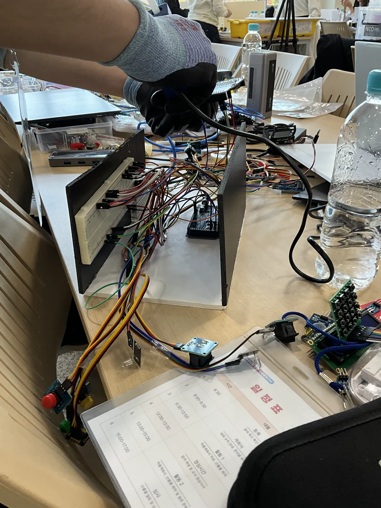
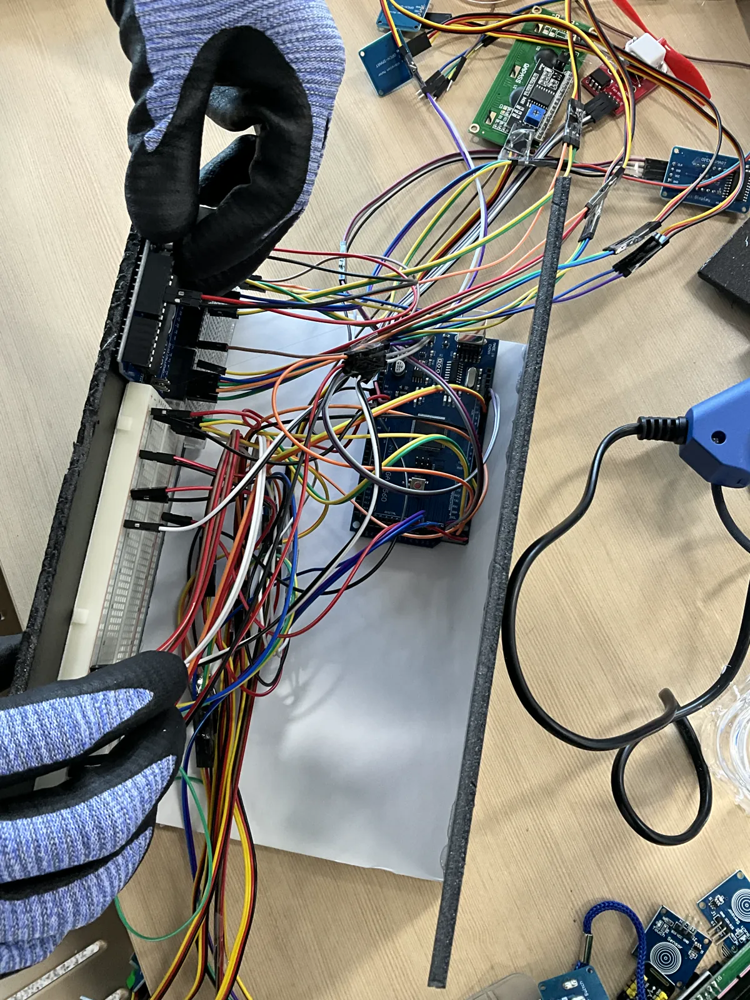
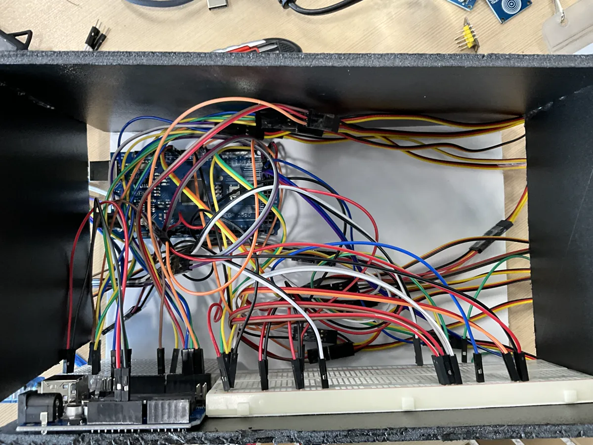
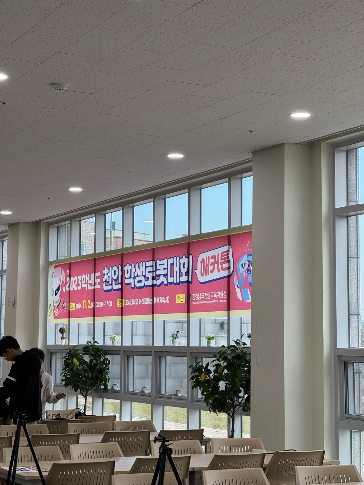

프로젝트 개요
2024 제 5회 천안 학생 로봇 대회에서 동상을 수상한 프로젝트입니다. 아두이노 허스키렌즈의 얼굴 인식 기능을 활용하여 학생의 졸음을 실시간으로 감지하고 경보를 울리는 시스템을 개발했습니다.
주요 기능 / 내용
- 허스키렌즈로 눈 감김 및 고개 떨굼 실시간 감지
- 졸음 감지 시 진동 모터로 경보 출력
- 아두이노와 허스키렌즈 통신
- 졸음을 날려버릴 선풍기
- 공부 타이머
- 전원 시스템
- 피젯 토이
- 2024 제 5회 천안 학생 로봇 대회 동상 수상
프로젝트 사진






나의 역할
아두이노 개발 · 2인 팀
- 기획
- 발표
- 아두이노 프로그래밍
- 아두이노 배선
- 그 외 다수